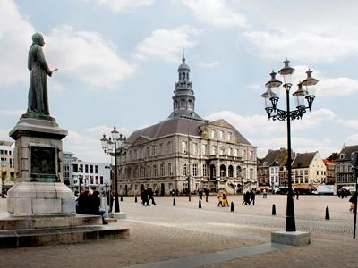
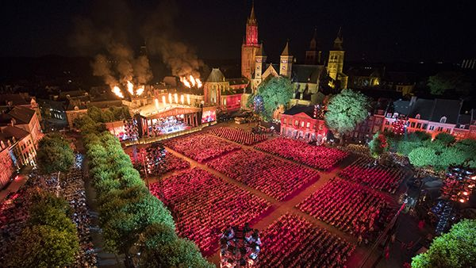

Maastricht is een heerlijke stad om te wonen. Precies groot genoeg, uitnodigend en gezellig centrum, historische gebouwen naast
hypermoderne architectuur en industrieel erfgoed. De stad bruist, onder andere dankzij de vele studenten, en er is van alles te
beleven.
Maastricht staat bekend om zijn historische binnenstad, om het carnaval en om de bourgondische levensstijl.
Maastricht heeft
ontzettend veel te bieden. Een boottocht over de Maas, een muzikaal concert van André Rieu of een historische stadswandeling.
Tussendoor kun je natuurlijk heerlijk shoppen en aan culinair genot is er geen gebrek! Maastricht voelt als een stukje buitenland.
De sfeer, het bourgondische karakter, de vele (verwarmde) terrasjes; in Maastricht ben je echt even weg.
Een mooie stad voor een dagje uit of een weekendje weg.
Uiteraard mag het Vrijthof, het Onze Lieve Vrouwe plein en de St Servaas brug niet ontbreken tijdens je bezoek.
De Markt (Maastrichts: Merret) is een plein in de binnenstad van Maastricht. Het plein ontleent zijn naam aan de warenmarkten die hier al eeuwenlang plaatsvinden. Tevens bevindt zich op de Markt het Stadhuis van Maastricht en een groot aantal . De Markt is goed bereikbaar met het openbaar vervoer (stadsbussen Arriva).De Markt (Maastrichts: Merret) is een plein in de binnenstad van Maastricht. Het plein ontleent zijn naam aan de warenmarkten die hier al eeuwenlang plaatsvinden. Tevens bevindt zich op de Markt het Stadhuis van Maastricht en een groot aantal . De Markt is goed bereikbaar met het openbaar vervoer (stadsbussen Arriva).De Markt (Maastrichts: Merret) is een plein in de binnenstad van Maastricht. Het plein ontleent zijn naam aan de warenmarkten die hier al eeuwenlang plaatsvinden. Tevens bevindt zich op de Markt het Stadhuis van Maastricht en een groot aantal . De Markt is goed bereikbaar met het openbaar vervoer (stadsbussen Arriva).
Het Vrijthof (Maastrichts: de Vriethof) is een plein in de binnenstad van Maastricht. Het is het grootste plein in het centrum van de Limburgse hoofdstad. Het plein is vooral bekend vanwege de vele monumenten waaronder een voor Nederland unieke ' kerkentweeling', diverse culturele voorzieningen, een reeks jaarlijks terugkerende evenementen en de vele caféterrassen. De geschiedenis van het Vrijthof is door het onafgebroken gebruik sinds de Romeinse tijd uniek in Nederland.Het Vrijthof (Maastrichts: de Vriethof) is een plein in de binnenstad van Maastricht. Het is het grootste plein in het centrum van de Limburgse hoofdstad. Het plein is vooral bekend vanwege de vele monumenten waaronder een voor Nederland unieke ' kerkentweeling', diverse culturele voorzieningen, een reeks jaarlijks terugkerende evenementen en de vele caféterrassen. De geschiedenis van het Vrijthof is door het onafgebroken gebruik sinds de Romeinse tijd uniek in Nederland.